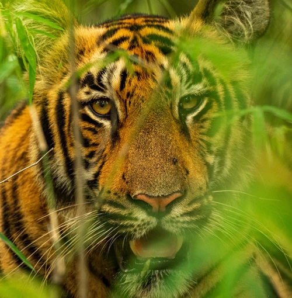
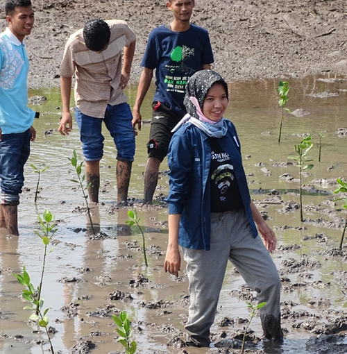
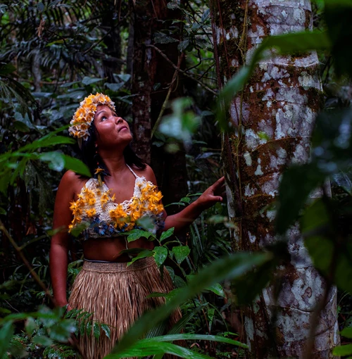
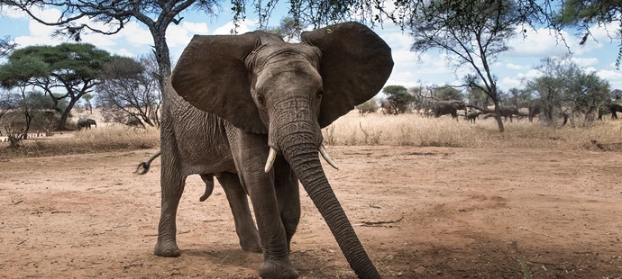
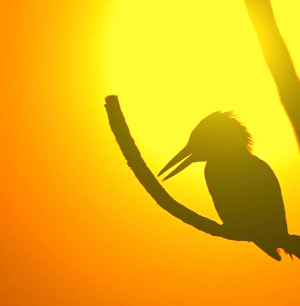
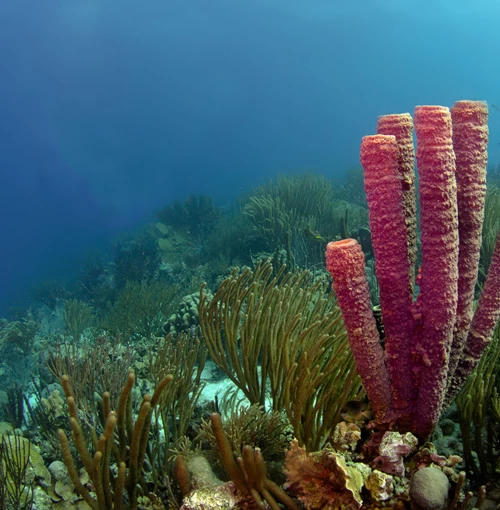

Meer natuur, vandaag nog
WWF staat midden in het veld om natuur te beschermen en herstellen. Van Limburgse rivieren tot Amazone regenwoud, van Caribisch koraal tot Afrikaanse wildlife. Met de poten in de modder: dóen is wat wij doen.
Be One With Nature
WWF begon ooit als beschermer van dieren als de panda. Inmiddels is onze uitdaging veel groter. Extreme hitte, droogte en overstromingen. Natuurverlies en klimaatverandering raken vandaag ál het leven op aarde. Niet in de laatste plaats onszelf.
Om dit te stoppen hoor je vooral wat minder moet. Minder consumeren. Minder CO2 uitstoten. Dat is één kant. De andere kant gaat niet over minder, maar juist over meer. Er is meer natuur nodig, vandaag nog.
Want meer, en meer diverse natuur heeft een krachtig domino-effect. Meer bijen betekent meer bloemen. Meer bloemen, meer vogels. Meer vogels, meer bossen. Meer bossen, meer zuurstof. En minder CO2.
Alles is met elkaar verbonden.
Daarom is WWF op een missie: we gaan onze wereld ‘Nature Positive’ maken. Van natuurverlies naar natuurwinst, zo snel mogelijk. Zo blijft de aarde leefbaar voor iedereen. Het kán, als we er samen voor kiezen.
Jongeren, politici, boeren, burgers en CEO’s. Steeds meer mensen strijden mee en kiezen voor meer natuur. Met wat ze eten, kopen en steunen. Het besef dringt door: natuur redden, is onszelf redden. We zijn onderdeel van de natuur.
Wat doet WWF?
- 
- 
- 
- 
- 
- 
Femke Hilderink-Koopmans
Expert wildlife
"Sinds de middelbare school droomde ik ervan om bij WWF te werken."
Meer over het Wereld Natuur Fonds
Over WWF Geschiedenis van WWF Projecten van WWFResultaten en Updates
De Nederlandse Bonenatlas: Bonen ...
Meer info >
Ons Nederlandse voedselsysteem: Puzzelstukjes op zijn plaats
Meer info >
Bouwen mét natuur, niet er bovenop!
Meer info >